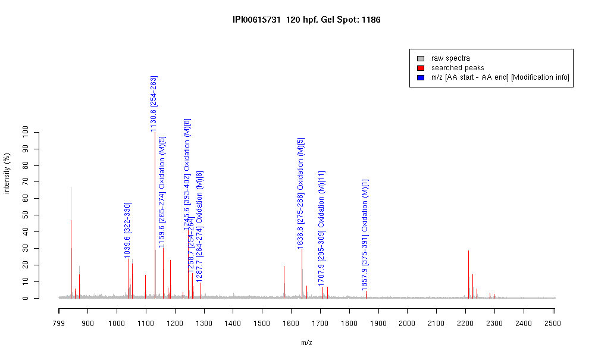

| Name | "PREDICTED: similar to tubulin, beta, 2isoform 3" |
|---|---|
| MW | 51068.6 |
| PI | 4.79 |
| Mascot Protein Score | 88 |
| Masses (matched / unmatched) | 9 / 25 |

| Peptide | MZ (calc) | MZ (observed) | Error (DA) | Error (PPM) | Start | Stop | Modifications |
|---|---|---|---|---|---|---|---|
| YLTVAAVFR | 1039.5935 | 1039.5906 | -0.0029 | -3 | 322 | 330 | |
| FPGQLNADLR | 1130.5953 | 1130.5999 | 0.0046 | 4 | 254 | 263 | |
| LAVNMVPFPR | 1159.6292 | 1159.6292 | 0 | 0 | 265 | 274 | Oxidation (M)[5] |
| ISEQFTAMFR | 1245.5933 | 1245.5935 | 0.0002 | 0 | 393 | 402 | Oxidation (M)[8] |
| FPGQLNADLRK | 1258.6902 | 1258.6798 | -0.0104 | -8 | 254 | 264 | |
| KLAVNMVPFPR | 1287.7241 | 1287.7156 | -0.0085 | -7 | 264 | 274 | Oxidation (M)[6] |
| LHFFMPGFAPLTSR | 1636.8304 | 1636.8304 | 0 | 0 | 275 | 288 | Oxidation (M)[5] |
| ALTVPELTQQMFDAK | 1707.8622 | 1707.8735 | 0.0113 | 7 | 295 | 309 | Oxidation (M)[11] |
| MAATFIGNSTAIQELFK | 1857.9415 | 1857.9172 | -0.0243 | -13 | 375 | 391 | Oxidation (M)[1] |